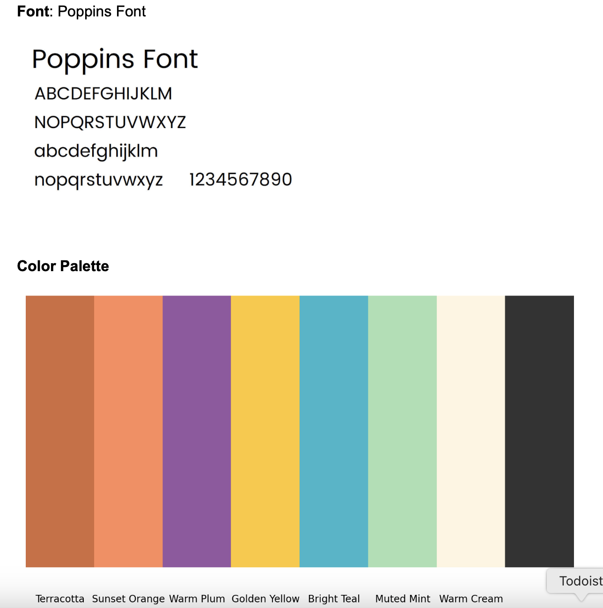
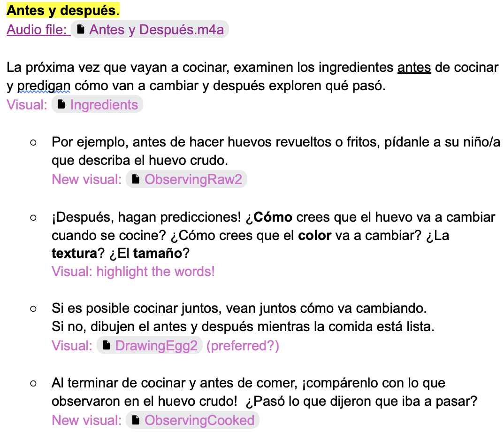
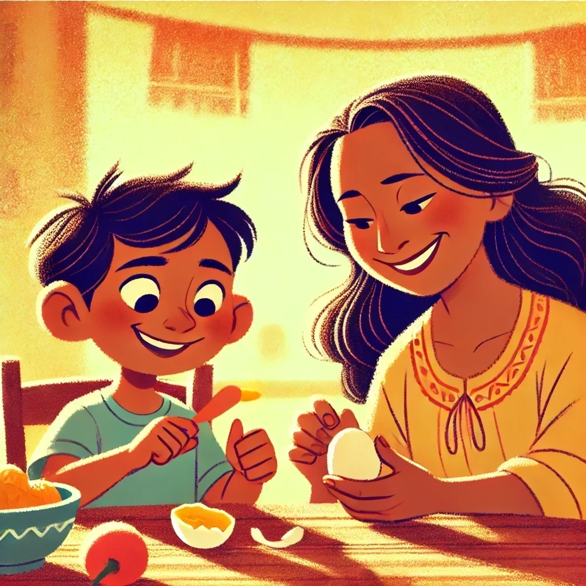
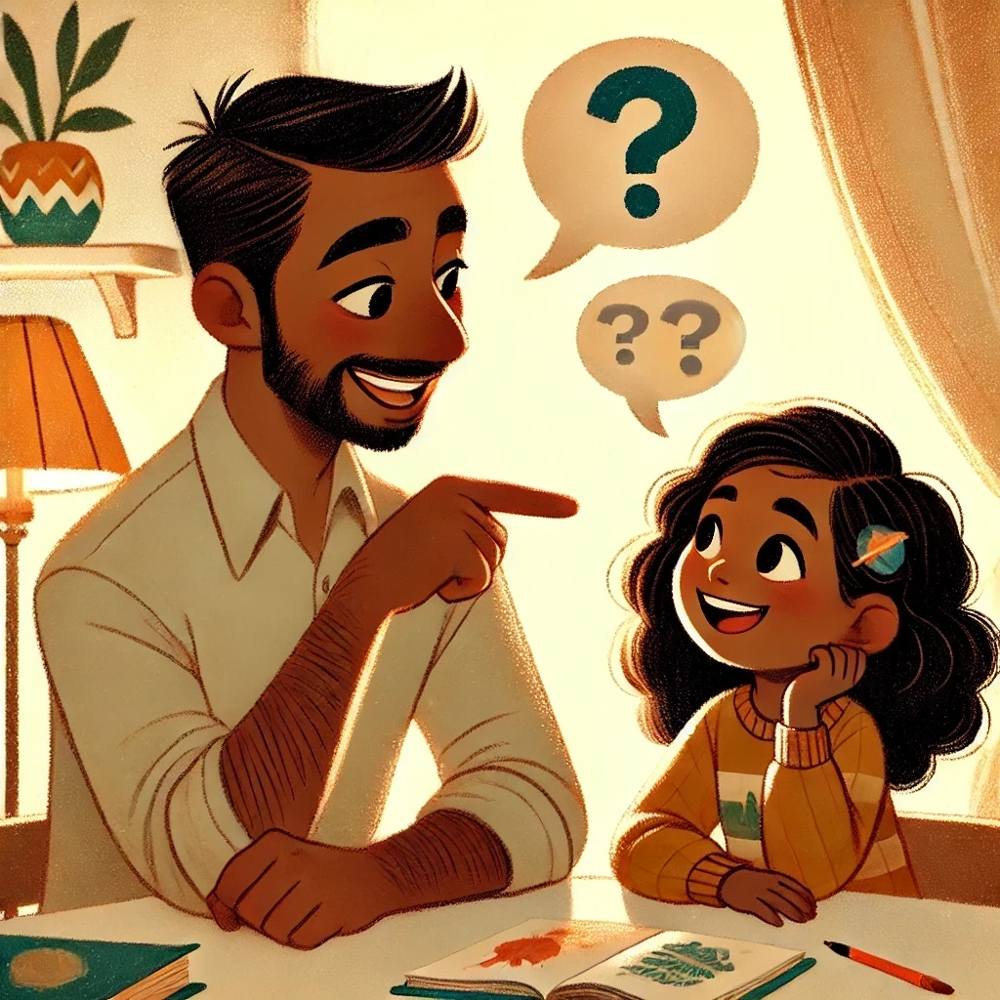
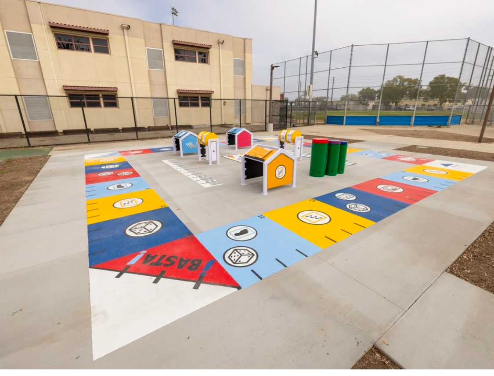
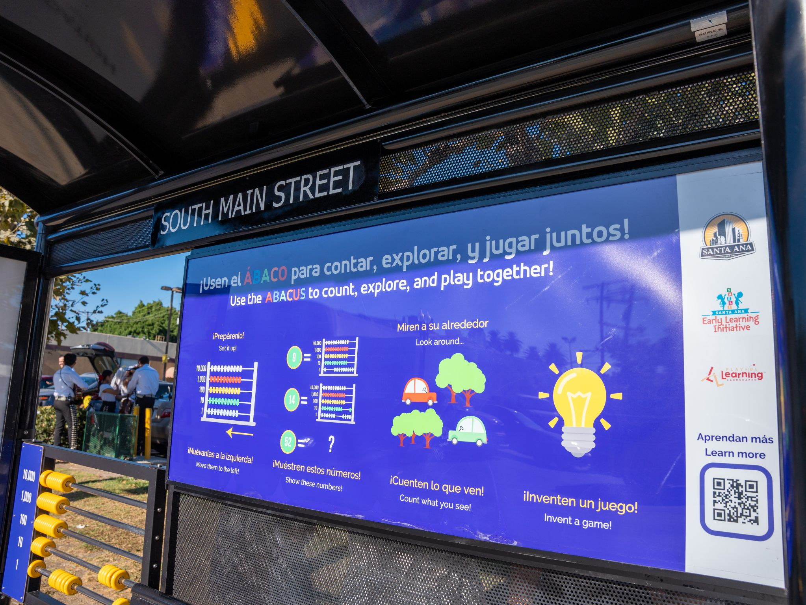
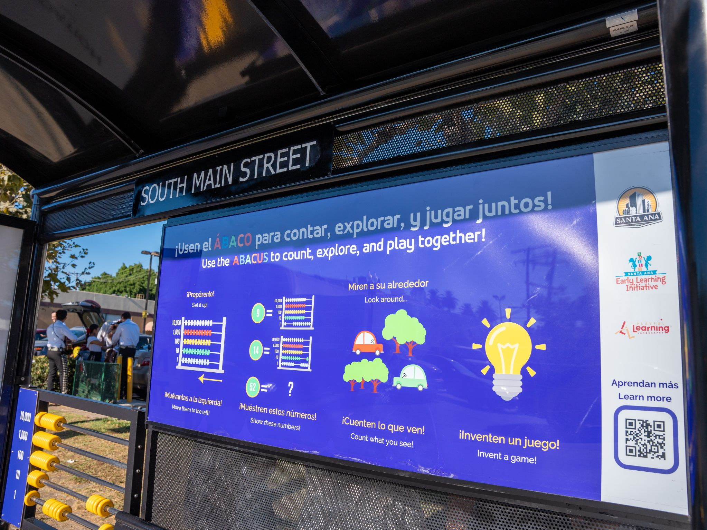

Ingredients For Learning (I4L) [current]
My roles: Project Manager, Lead UX Researcher, Lead Designer
Description:
Ingredients for Learning is a community-based initiative co-designing tools that promote early childhood (ages 3-5) STEM and literacy skills within families’ everyday food routines.
Tasks:
✓ Oversee the project including timeline, budget, scope, and stakeholder relations.
✓ Research design, planning, facilitation and execution of participatory design study and subsequent pilot study to ensure usability and engagement.
✓ Develop, produce, and publish interactive core learning tool with all assets: videos for mobile interfaces, specifically social media (TikTok, YouTube)
✓ Make sure the tool is responsive to everyday family routines and values while scaffolding parent-child interactions to to support the child’s STEM and literacy skills.
Methods: Participatory design, naturalistic implementation, focus groups, observation, qualitative analysis
Stakeholders: University of Pittsburgh, UC Irvine, Santa Ana Early Learning Initative, parents and children of Santa Ana community.
Challenges:
(1) Embedding STEM and literacy into real-life family practices while considering time constraints, resources, and household realities.
(2) Intergenerational engagement beyond parents in early childhood learning initiatives.
(3) Maintain cultural sustaining practices of food, while navigating community's own realities (e.g. food deserts, low literacy in parents, little time/multiple jobs).
Impact:
✨ Empowering Parents as Learning Partners and Co-designers: Through co-design, parents both develop and gain tools to integrate STEM and literacy learning into daily life, making school readiness more accessible for Latine children.
✨ Sustainable Community-owned Learning Routines: Families receive easy-to-use, culturally sustainable educational resources that fit into their food practices, values and life. The videos and materials are designed by the community, for the community, ensuring long-term use beyond the project's initial scope.
✨ Shaping Equitable Early Learning Models: The project informs research-driven, community-centered approaches to early childhood education that can be adapted beyond this specific community.
Participatory design sessions:


Sample of design assets and style guides I created:




i4L YouTube channel with final "shorts" videos (mobile recommended):
YouTube
Children's Hospital of Orange County (CHOC) pediatric clinic partnership [current]
My Roles: Project Manager, Lead UX Reseracher, Mentor/supervisor
Description: This project extends Playful Learning Landscapes and the mobile app (see project below) to CHOC clinics, using interactive physical installations and digital games to enhance families’ healthcare experiences while promoting health and science literacy.
Tasks:
✓ Lead the design of community-based participatory design workshops to design interactive installations and mobile experiences.
✓ Balance multiple stakeholder requirements from universities, CHOC, and community partners while navigating power differentials.
✓ Train and manage a cross-funcitonal team of graduate students, undergraduates, and community partners, providing mentorship and building capacity on research methodologies, data collection, and user engagement strategies.
Methods: Participatory design methodologies, observation, qualitative analysis
Stakeholders: : Collaboration of 3 universities, Children's Hospital of Orange County (CHOC) staff and patients (+ families), Santa Ana Early Learning Initative
Challenges:
(1) Bridging Healthcare & Playful Learning: Designing experiences that balance health knowledge, engagement, and cultural relevance to make clinic visits more interactive and meaningful for families.
(2) Cross-Disciplinary Collaboration: Managing input from medical professionals, researchers, UX designers, and engineers to create a cohesive, user-centered experience.
(3) Addressing Power Differentials: Ensuring that community voices are heard and valued in conversations where medical professionals and academic researchers traditionally hold authority, fostering equitable collaboration and decision-making.
Expected Impact:
✨ Enhancing Family Conversations: The installations and app aim to deepen family discussions and learning opportunities about health during clinic visits.
✨ STEM & Health Literacy: By integrating playful learning tools, we support early STEM education while providing doctors with engaging ways to communicate complex health topics to young patients.
✨ Improving Patient Experience: The project is designed to increase patient engagement and reduce stress during doctor visits.


Playful Learning Landscapes companion mobile app
My Roles: User experience (UX) researcher, project manager assistant, designer, qualitative data analyst
Description:
*Playful Learning Landscapes* initiative reimagines public spaces as interactive learning hubs for STEM education through play.
Through community-based participatory design research and collaboration with the Santa Ana Early Learning Initiative (SAELI), we co-designed 5 physical installations and a companion mobile app.
Tasks:
✓ Analyzed qualitative data (audio recordings, artifacts) and translated user insights and values into design assets.
✓ Facilitated usability testing with families to assess usability and engagement of the high-fidelity mobile app prototype.
✓ Co-led planning and implementation of five physical installations in public spaces, while orchestrating researchers, designers, artists, contractors, community members, and City of Santa Ana officials.
✓ Create prototypes for the physical installations, deisgned the webpage layout, and gave feedback on wireframes and prototypes for the the mobile app.
Methods: Participatory design, participant observation, usability testing (think aloud), qualitative data analysis (coding, thematic analysis)
Stakeholders: UC Irvine, Santa Ana Early Learning Initiative, Santa Ana local government, parents and members of the community, National Science Foundation
Main challenges:
(1) Bridging the physical and virtual by designing and age-appropriate mobile app to seamlessly connect with physical installation experiences, while ensuring it remains an engaging, meaningful learning tool for children who cannot visit in person.
(2) Providing fun and replayability in physical and virtual experiences while achieving research-based learning goals.
(3) Cross-Disciplinary collaboration and orchestrating designers, programmers, and contractors to build both physical and digital installations that integrate seamlessly.
Impact:
✨ Democratizing Design & Amplifying Community Voices: Our participatory approach fosters pride, ownership, and representation, ensuring that families and communities have an active role in shaping their environment.
✨ Expanding STEM Learning in Everyday Public Spaces: By embedding playful, interactive learning experiences in everyday places, like grocery stores, we create opportunities for parents and children to engage with STEM concepts beyond traditional classrooms.
✨ Transforming Public Spaces into Welcoming, Safe Learning Environments: These installations help reimagine spaces that were previously perceived as unwelcoming or unsafe, especially some parks and bus stops, into vibrant, community-centered hubs with welcoming infrastructure where families feel encouraged to gather, learn, and play.
✨ Scaling Impact: Replication Across Santa Ana – The success of this initiative has led the Santa Ana government to begin replicating these installations in additional locations across the city.
UI Text and wireframes I created for the website, and the final product refined by a professional web developer:
UI Text
 Wireframe and final design
Wireframe and final design

Initial prototype I created and iteratted, which was then refined by a professional graphic designer. Here's a look at the process:.
.jpg)
.jpg)

Physical Installations in Santa Ana, California



 

igniting Diversity Representation and Equitable Access to Machine learning (iDREAM)
My roles: Project manager, lead researcher, lead curriculum designer.
Description: iDREAM is a community-based educaitonal initative co-designed to empower minoritized youth (ages 12–18) with foundational knowledge of machine learning through culturally sustaining curricula focused on equity, ethics, and social justice.
Tasks:
✓ Led the end-to-end research pipeline, with study design, rectuirment, data collection, and analysis.
✓ Built and mainatined a cross-disciplinary partnership with 2 NGOs and subject matter experts while manaing stakeholder interests, goals, and priorities to create the program.
✓ Conducted participatory design sessions, facilitated an 8-session pilot program, and performed final interviews with mentors.
✓ Designed and iterated a machine learning curriculum that is accessible across different digital literacy levels while ensuring it aligns with community values and justice-oriented topics.
✓ Applied qualitative analysis to assess learning impact, youth’s mental model shifts, and uncover key insights from mentors to inform program improvements.
Methods: Participatory design, curriculum development and iteration, semi-structured in-depth interviews, observation, qualitative analysis
Stakeholders: ListoAmerica organization, SBX Youth and Family services organization, community and youth members, and AI experts.
Challenges:
(1) Balancing Stakeholder Interests & Priorities: Managed diverse perspectives from NGOs, AI experts, researchers, and community members to create an impactful program.
(2) Embedding Ethics into AI Education: Ensured ethics was not an add-on but a core part of the curriculum while honoring community values and lived experiences.
(3) Making AI Content Accessible & Engaging: Designed curriculum for youth with low digital literacy while ensuring content was accessible, accurate, relevant, and justice-oriented.
Impact:
✨ Community-Driven AI Education: Community members not only learned about AI but also co-created the program, marking the first time they designed a STEM curriculum, transforming AI from something removed from them to something they felt comfortable talking about.
✨ Shifting AI Perceptions & Youth Empowerment: Pilot demonstrated early success in challenging youth's misconceptions about AI through playful hands-on exercises, and fostering a sense of agency and critical thinking in how they engage with the technology.
✨ Expanding Accessibility: Currently refining the program for adaptability within the Clubhouse modular structure, making it scalable for youth across different cultural backgrounds.
Youth Connections for Wellbeing
My roles: Researcher, Faciliator, Curriculum co-creator and Design instructor, Qualitative data analyst
Description
Youth Connections for Wellbeing is a project that explored youth's insights, agency, and technology engagements to support their wellbeing.
Our stage focused on a participatory design project oriented towards teen digital wellness.
Tasks:
✓ Co-designed the program structure and curriculum, ensuring a balance between teaching design skills and co-creating wellness tools with youth.
✓ Developed and facilitated interactive sessions where youth explored wellness challenges and collaboratively designed digital solutions.
✓ Co-created the interview protocol and conducted semi-structured interviews with participants.
Methods: Participatory design, semi-strucured interviews, participant observation, curriculum design, qualitative data analysis
Stakeholders: UC Irvine, ListoAmerica Clubhouse, HCI reserachers and educators, 11 youth, Pivotal Ventures
Challenges:
(1) Understanding Intersectional Relationships Between Wellness & Technology: Maintain a balance between youth articulating their unique challenges, and identify ways technology can support or not their well-being.
(2) Teaching Youth to Design While Designing a Wellness Tool: Developed a learning-through-design approach, where participants learned human-centered design principles while actively creating tools for their own wellness.
Impact:
✨ Shaping Future Youth Wellness Tools: The co-designed wellness tools emphasized community and inclusion, providing critical insights for future culturally sustaining design initiatives for teens.
✨ Developing Best Practices for Remote Engagement: Our pivot to an online format due to COVID-19 yielded valuable strategies for virtual research and participatory design, which have been shared as best practices for remote youth engagement.
Tenacity
My roles: UX Researcher, facilitator, and Qualitative data analyst.
Description:
This project used participatory design and field deployment to explore the re-design a gamified experience for self-regulation among teens using wearable devices.
Tasks:
I coordinated a team of 8 graduate students and design interns. I co-designed and executed the interview porotocol, diary study, and surveys.
Analyzed qualiative data from diary studies, interviews/focus groups and provided design insights and feedback.
Tested each design before release, and supervised topics of inclusion and cultural awareness in design.
Methods: participatory design, semi-structured interviews/focus groups, diary studies, surveys, qualitative data analysis
Stakeholders: University of California, Irvine, School in Santa Ana, CA, HCI reserachers and educators, teen youth, NSF, middle and high school teachers
Challenge:
(1) How do youth in early adolescence conceptualize self-regulation?
(2) How can we incpororate youth's ideas of self regulation into the app in a way that they will use it?
(3) Get teens to use the app (have you asked teens to do something for a long time??)
How can we co-design a re-design of an app that captures their concept of self-regulation and that youth will use and is engaging?
Impact:
These findings influenced both the final app design and our approach to youth-centered digital tools.
This project contributed to a nuanced understanding of how youth-defined self-regulation can be supported through technology, and it provided key insights into designing privacy-conscious, inclusive wellness tools that respect the needs and interests of young users.
App menu, breathe activity, and matching minigame: